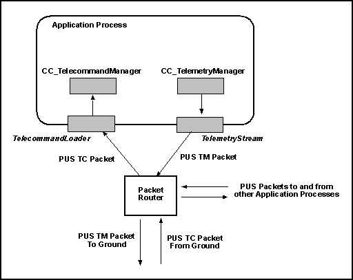
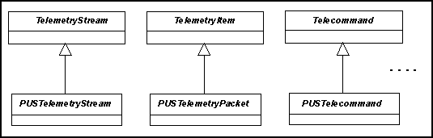

The OBS Framework is designed for general use but is in particular compatible with the
Packet Utilization Standard (PUS) defined in ESA's ECSS-E-70-41. This page discusses the
extent of this compatibility and in particular the extent to which the services defined
by the PUS are directly supported by the OBS Framework.
In PUS terms, the OBS Framework can be used to instantiate an application process.
The architecture that is implied by the OBS Framework is shown in the figure:
 The shaded items are provided by the OBS Framework.
The packet router must instead be provided externally. From the point of view of the
application process the packet router has two functions. It must make available the PUS
telecommand packets that have the application process as their destination and it must
receive the PUS telemetry packets that the application process generates. The interfaces
between the packet router and the application process are
the
TelecommandLoader and the
TelemetryStream classes. Note that
these are abstract classes. Applications will have to instantiate them to take account
of the exact interface of the packet router. The telecommand loader interprets the PUS
packet and uses its content to build a component of type
Telecommand that
encapsulates the telecommand. This is then executed by
the
CC_TelecommandManager component. In a symmetric process, telemetry packets
are represented inside the application process by components of
type
TelemetryPacket. The content of the telemetry items is written to the
telemetry stream by the
CC_TelemetryManager component. The task of the
telemetry stream is to transfer the telemetry data to the packet router.
In order to preserve generality and to be useful in non-PUS contexts, the classes
provided by the OBS Framework are organized upon two layers of abstraction as
illustrated in the figure:
 The general idea is that,
at the highest level of abstraction, the framework provides classes that are not
PUS-specific but which are PUS-compatible in the sense that they can be subclassed to
become PUS-specific. Thus, application developers who do not have to be PUS-compliant
can use the top-level classes as the base from which to derive their
application-specific classes whereas developers who need to be PUS-compliant can use the
PUS-specific versions of the same classes. As explained below, the OBS Framework
provides default implementations of the PUS classes implementing the more common PUS services.
PUS telecommand packets are imported into the application process by a concrete subclass
of TelecommandLoader. The OBS Framework provides one default implementation
of this class - class DC_BasicPUSTcLoader - that can decode a PUS telecommand
packet. A PUS telecommand loader interprets the telecommand packet and uses the
information it contains to create a component of type PUSTelecommand. In
general, a subclass of this abstract class is provided to encapsulate each PUS
telecommand-based service type or cluster of related service subtypes. The execution of
the telecommand is entirely encapsulated in the telecommand component.
Conceptually, the telecommand component instance is created dynamically by the
telecommand loader after it has decoded the telecommand packet. In practice, in order to
avoid dynamic memory allocation, the telecommand component instances are retrieved from
a dynamic
factory. The dynamic factory for the PUS telecommands is generated automatically by
a generator meta-component provided by the
OBS Framework. It can therefore be exactly tailored to match the need of an application.
In the OBS Framework, telecommands are intended to encapsulate punctual actions. In the PUS
concept instead, telecommands may encapsulate actions that are executed over an interval
of time. In order to solve this problem, the OBS Framework introduces PUS Telecommand
Manoeuvres. These are manoeuvres that are intended to model
the non-punctual actions associated to a PUS telecommand. PUS telecommand manoeuvres are
implemented as subclasses of class PUSTcManoeuvre. Telecommands that must
execute an action that extends over time do so by launching a manoeuvre of type PUSTcManoeuvre.
For testing purposes, the OBS Framework provides a test PUS telecommand (class
DC_TestPUSTelecommand) that provides a dummy and partially configurable
implementation of a PUS telecommand.
PUS telemetry packets are implemented as instances of class
PUSTelemetryPacket. In general, a subclass of this abstract class is provided
to encapsulate each PUS telemetry-based service type or cluster of related service
subtypes. The telemetry packet component encapsulates all information required to
collect and format the data that must be stored in the telemetry packet.
Telemetry packets are forwarded to their destination through a concrete subclass of
TelemetryStream. The OBS Framework provides two default implementations of
this class: DC_BasicPUSTmStream and DC_PUSTmLogger. The first one
can generate an image of the telemetry data that is formatted as a PUS telemetry packet.
The second one can be used for testing purposes: it archives the telemetry packets it
retrieves in a circular buffer and allows them to be retrieved for inspection.
Conceptually, the telemetry packet components are created dynamically when the
corresponding telemetry packet is required by the ground. In practice, in order to avoid
dynamic memory allocation, the telemetry packet components are retrieved from a dynamic
factory. The dynamic factory for the PUS telemetry packets is generated
automatically by a generator meta-component
provided by the OBS Framework. It can therefore be exactly tailored to match the need of
an application.
For testing purposes, the OBS Framework provides a test PUS telemetry packet (class
DC_DummyPUSTelemetryPacket) that provides a dummy and partially configurable
implementation of a PUS telemetry packet.
The level of implementation of the PUS Services is currently expanding as more
PUS-related components are being added to the OBS Framework. An overview of the degree
of implementation for each PUS service is provided in this page.